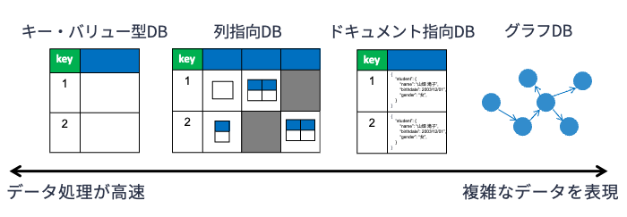
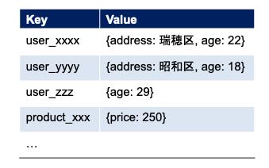
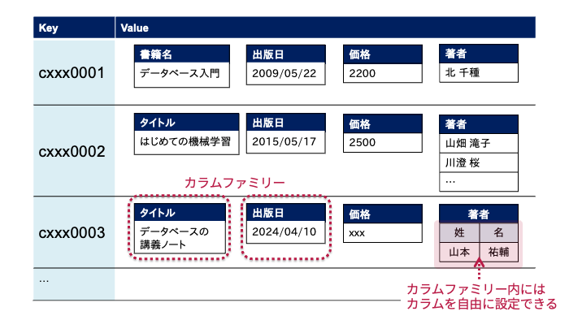
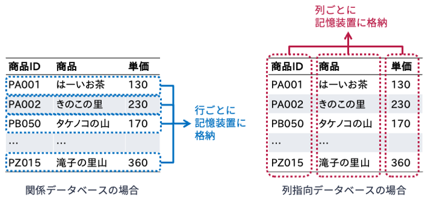
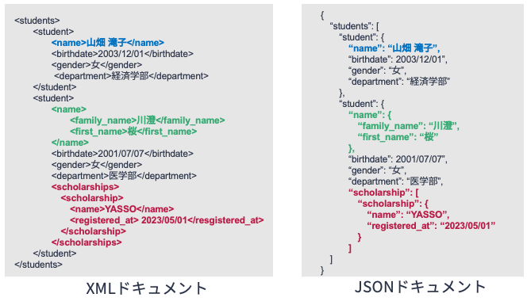
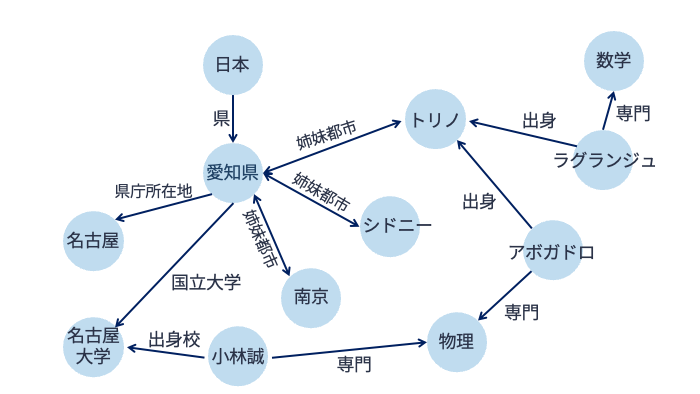

14. NoSQL#
これまで計14回に渡って学んできた関係データベースは，データの重複や矛盾を排除し，データ間の整合性を保つことを重視したデータベース技術である． 関係データベースはその特性から，
データの構造を（事前に）きっちりと定義できるケース
データを正しく保つことが求められるケース
において特に真価を発揮する． そのため，顧客管理，在庫管理，購買管理などのビジネス現場において重宝されている．
関係データベースは1970年頃に生まれた技術であるが，今日においてもデータベースの中心的な存在である． しかしながらビッグデータ時代においては，従来の関係データベースでは扱いきれないデータ処理事例が発生している． NoSQL [1]は，関係データベースがもつ特性を一部犠牲にすることで，関係データベースでは扱いきれないデータ処理事例に対応するためのデータベース技術の総称である．
以下，NoSQLについてに簡単に解説する． なお，NoSQLは関係データベースを補完する技術であり，NoSQL（あるいは関係データベース）のほうが優れているというわけではない． ケースに応じて関係データベースとNoSQLを使い分けることが重要である．
14.1. ビッグデータを扱うためにデータベースに求められること#
一般に，ビッグデータは以下のような3つの性質を満たすデータの集合を指す：
High volume: 扱うデータの「量」が多い
High variety: 扱うデータの「種類」が多い
High velocity: 扱うデータが「生成される速度」が速い
関係データベースシステムは計算機の上で動くソフトウェアである． そのため，CPUやメモリ，二次記憶装置といった計算機などのコンポーネントを強化することで，関係データベースのパフォーマンスを向上させることが可能である（このアプローチをスケールアップ あるいは垂直方向のスケーリング と呼ぶ）． しかしながら，関係データベースの「データを正しく管理することに特化した設計」が仇となり，データの量や種類，生成速度が「圧倒的に大きい」ビッグデータに対しては，スケールアップした関係データベースですら処理が間に合わないことがある．
データベースへの膨大な問い合わせを処理する方法の一つは，データベースのコピーや分割したものを複数の計算サーバ上に配置することで，サーバの稼働状況や負荷状況に応じて問い合わせ処理を振り分ける（分散させる）といった方法である． このように，1つの計算機をパワーアップさせるのではなく，計算サーバを増やすことで総体としてサービスのパフォーマンスを高めるアプローチをスケールアウト あるいは水平方向のスケーリング と呼ぶ．
ウェブ検索エンジンやソーシャルゲーム，SNSといったビッグデータを扱うサービスにおいては，「データの正しさを厳密に保つこと」よりも「膨大かつ多様な種類のデータを安定的・高速に処理できること」が優先される． NoSQLはデータの正しさ（特に，データが常に最新であること）の管理を一部妥協することで，（スケールアップではなく）スケールアウトによってビッグデータ処理を実現する． また，データ構造をガチガチに固定する関係データベースとは対照的に，NoSQLは複雑かつ多様なデータを柔軟に扱うための工夫を有している．
14.2. 様々なNoSQL#
NoSQLは単一のデータベース技術ではない． 関係データベースの欠点を補うために，様々なタイプのNoSQLデータベースが開発されている． 最も一般的なNoSQLデータベースは，以下の4つである．
キー・バリュー型データベース
列指向データベース
ドキュメント指向データベース
グラフデータベース
重要なのは，それぞれのNoSQLデータベースの特徴を押さえて，ケースに応じてNoSQLデータベースと関係データベースを使い分けることである．

14.2.1. キー・ストア型データベース#
キー・バリュー型データベース（key-value store database; KVS database） は，以下の図のように重複のない（一意の）キーとデータの値（バリュー）のペアを格納する，非常にシンプルな構造のデータベースである． キー・バリュー型データベースはキーとバリューという2つの属性からなる関係データを扱っているように見えるが，関係データベースのようにデータに厳密な約条件を設けない． また，問い合わせもキーの値を直接しそれに対応するバリューの値を受け取る ことに特化している．

このように，キー・バリュー型データベースはデータ構造を単純化し，問い合わせ形式を限定することで，データ処理を超高速化している． 一方，複数のテーブルにまたがるデータの結合が必要となるケースには適していない． 代表的なキー・バリュー型データベースとしては，RedisやAmazon DynamoDBなどがある．
14.2.2. 列指向データベース#
列指向データベース（column-orieted database） は，キー・バリュー型データベースを拡張したようなNoSQLデータベースである．
列指向データベースはワイドカラムデータベース（wide-column database） あるいはカラムファミリーデータベース（column-family database） と呼ばれることもある．
以下の図のように，列指向データベースではデータをキーとバリューからなるペアとして管理する．
キー・バリュー型データベースとの違いは，バリューとしてカラムファミリーと呼ばれるキー・バリュー構造のデータを持つことができる点である．
例えば，図中のキーがcxxx0001のデータの価格の値を取得したい場合は，キーの値とカラムファミリー名を指定すればよい．

なお，カラムファミリーの中には，同じくキー・バリュー構造のカラムを複数もつことができる．
例えば，上図においてキー値がcxxx0003のデータは，著者カラムファミリーの中に姓というカラムと名というカラムを持っている．
列指向データベースにどのようなカラムファミリーを持たせるかはデータベース設計時に決めておく必要があるが，カラムファミリーの中のカラムはデータに応じて柔軟に追加することができる．
列指向データベースは，関係データベースのように複数のレコードを横断して集約するような問い合わせには向いていない． また，データの整合性の担保も難しい． しかし，キーとカラム名によって高速なデータ処理が可能，スケールアウトが可能といったメリットがある． 代表的なワイドカラムデータベースとしては，Google Bigtable，Apache Cassandraなどがある．
Note
もう1つの列指向データベース
実は，ワイドカラムデータベースとは別に，カラムナーデータベース（columnar database） と呼ばれる列指向データベースがある． 両者は区別せずに語られることがあり，注意が必要である．
下図のように，カラムナーデータベースでは表形式のデータを列ごとに記憶装置に格納する． 記憶装置の特性上，カラムナーデータベースは同じ列に格納された値の集計演算を高速に行うことができる． 行か列かの些細な違いに思えるが，関係データベースのような行指向のデータベースで集約演算を行う際には，いったんは注目しない列（属性）の値も読み込むため効率が悪い． そのため，列ごとの集計演算を頻繁に行う場合は列指向データベースが適している．

カラムナーデータベースはNoSQLとは位置づけられていないが，ビッグデータ時代において非常に強力なツールである[2]． 代表的なカラムナーデータベースとしては，Google BigQueryなどがある．
14.2.3. ドキュメント指向データベース#
関係データベースでは，テーブルのスキーマは設計時に確定させ，それを使い続けることが前提となっている． ところが，実際にサービスを運用し始めると，スキーマを修正したくなることがある． また，データに応じて柔軟に補助的な属性を追加したいといったケースもしばしばある． このようなケースで有用なNoSQLがドキュメント指向データベースである．
ドキュメント指向データベース（document-oriented database） は関係データベースにおけるレコードにあたるものを，XMLやJSON形式のドキュメントとして表現する． XMLドキュメントもJSONドキュメントもデータを木構造で表現したものであるが，ドキュメント指向データベースはスキーマレスであり，どのような木構造でデータを表現するかはデータ投入時に柔軟に決められる． 以下の図は，2名の学生情報をXMLとJSONのそれぞれで表現した例である．

図を見ると分かるように，山畑滝子さんの氏名情報は姓名の区別なしに保存されているのに対して，川澄桜さんの氏名情報は姓名を区別して保存している．
また，川澄桜さんの情報にはscholarshipのフィールドを追加して奨学金に関する情報を記録している．
このようにドキュメント指向データベースでは，臨機応変にデータの構造を定義してデータを格納することができる． 代表的なドキュメント指向データベースとしては，MongoDBなどがある．
14.2.4. グラフデータベース#
以下の図のように，グラフデータベース（graph database） は様々なデータをノードとエッジの2種類の要素を使って管理する． ノードはエンティティ（実体）を表し，エッジはエンティティ間の関係を表す． ノードもエッジもそれに関する情報を内部に持つことができる． なお，グラフとはノートとエンティティから構成される数学的構造を意味する．

グラフデータベースは，エンティティ間にある多数の関係を表現するのに適している． データ構造の特性と様々なグラフ探索アルゴリズムによって，グラフデータベースでは「トリノ出身で数学を専門とする人」といった複雑な問い合わせを高速に実現することができる． 代表的なグラフデータベースとしては，Neo4jなどがある．